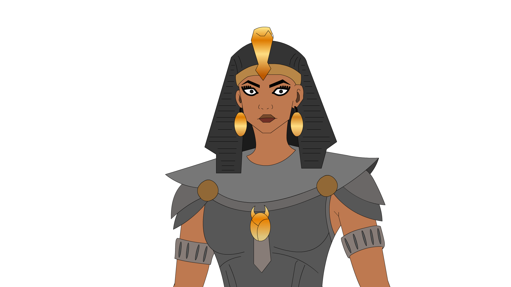

The Pharaoh
Step into the power and ceremony of Ancient Egypt through a visual exploration of the Pharaoh. This section introduces the ruler as a political, military, and sacred figure whose image shaped an empire.

Pharaoh's Throne Room
A ceremonial interior inspired by royal architecture, columns, and the elevated throne used to frame authority, ritual, and spectacle.
Encyclopaedia of Ancient Egypt
This volume presents an accessible overview of Ancient Egyptian life, kingship, belief systems, architecture, writing, burial customs, mythology, and art. It is designed as a visual reference with rich illustrations and concise explanatory text.
Click the book image to rotate through front, side, back, and open views.

Posters
A curated triptych of poster designs inspired by Egyptian history, archaeology, and museum-style print culture.